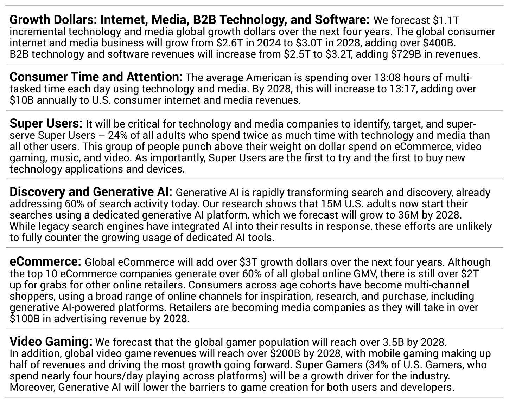

Activate forecasts $1.1T in incremental global tech and media growth over four years, with consumer internet/media reaching $3.0T and B2B tech/software $3.2T by 2028. U.S. time spent with tech and media inches up to 13:17/day, adding >$10B annually. Generative AI already powers 60% of search, shifting discovery toward dedicated AI tools. Advertising—especially CTV and retail media—drives over half of revenue growth as eCommerce adds >$3T.

Generative AI Share of Search Activity
“Generative AI is rapidly transforming search and discovery, already addressing 60% of search activity today.” — Unknown
For brands, media dollars should pivot toward retail media and connected TV where data access, closed-loop attribution, and rising inventory can improve ROAS, while content and product feeds must be optimized for AI-driven discovery as dedicated GenAI platforms capture more queries. Expect ad-supported streaming and retail media to offer efficient reach with measurable outcomes, especially among Super Users who over-index on spend and early adoption. Measurement must evolve to capture incrementality across CTV, retail media, and AI assistants—linking audience, attribution, and outcomes—while guarding against overreliance on legacy search signals that may undercount AI-influenced demand.